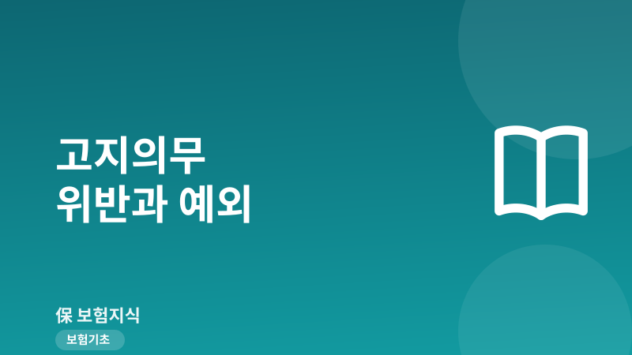
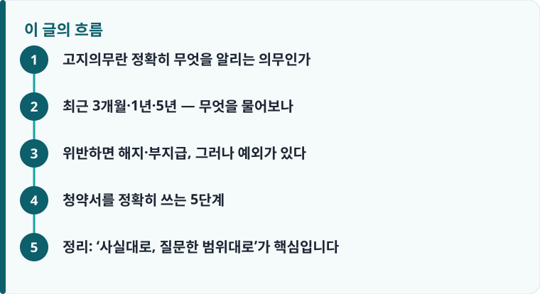

고지의무는 청약서 질문에 사실대로 답하는 의무이며, 위반하면 보험사가 계약을 해지하고 관련 보험금을 지급하지 않을 수 있습니다.
보통 최근 3개월 내 의료행위, 1년 내 재검사·추가검사, 5년 내 입원·수술·7일 이상 치료·30일 이상 투약 등이 질문 대상입니다.
알리지 않은 사실과 보험사고 사이에 인과관계가 없으면 그 보험금은 지급되어야 하고, 계약일로부터 3년이 지나면 해지할 수 없습니다.
고지의무란 정확히 무엇을 알리는 의무인가
고지의무는 보험에 가입할 때 계약자와 피보험자가 자신의 건강 상태나 직업 등 위험 정도에 관한 중요한 사실을 보험사에 사실대로 알려야 하는 의무입니다. 상법과 표준약관에서는 이를 ‘계약 전 알릴의무’라고 부릅니다. 보험사는 이 정보를 근거로 인수 여부와 보험료를 결정하기 때문에, 사실과 다르게 알리면 계약의 전제 자체가 흔들리게 됩니다. 이 의무의 법적 근거와 약관상 위치가 궁금하다면 약관 읽는 법에서 ‘계약 전 알릴의무’ 조항을 먼저 확인하는 것이 좋습니다.
중요한 것은 고지의무가 ‘내가 스스로 판단해서 알아서 다 말하는’ 의무가 아니라는 점입니다. 우리 법제는 청약서에 보험사가 서면으로 질문한 사항을 중요한 사항으로 추정합니다. 즉 청약서와 건강고지 항목에 적힌 질문에 정직하게 답하면 원칙적으로 의무를 다한 것이고, 질문하지도 않은 사항을 스스로 상상해서 신고할 필요는 없습니다. 그래서 실무에서 문제가 되는 대부분의 사례는 ‘청약서 질문에 아니오로 표시했지만 실제로는 해당 이력이 있었던’ 경우입니다.
최근 3개월·1년·5년 — 무엇을 물어보나
건강보험이나 실손보험 청약서의 알릴의무 질문은 대체로 기간별로 나뉩니다. 가장 짧은 기간은 ‘최근 3개월 이내’로, 이 안에 의사로부터 질병 확정진단, 의심 소견, 치료, 입원, 수술, 투약을 받았거나 권유받았는지를 묻습니다. 다음은 ‘최근 1년 이내’로, 건강검진이나 진료에서 추가검사·재검사를 받으라는 소견을 받은 적이 있는지를 확인합니다. 검진 결과지에 ‘추가검사 요망’이 적혀 있었다면 이 항목에 해당하므로 특히 주의해야 합니다.
가장 긴 기간은 ‘최근 5년 이내’입니다. 이 기간에 질병이나 상해로 입원, 수술을 받았거나, 계속해서 7일 이상 치료를 받았거나, 30일 이상 약을 복용한 적이 있는지, 그리고 암·백혈병·고혈압·당뇨병·심장질환·뇌졸중 등 약관에서 지정한 10대 또는 11대 질병으로 진단·치료받은 사실이 있는지를 묻습니다. ‘한 번의 진료로 끝난 감기’는 대개 해당하지 않지만, 같은 원인으로 7일 이상 반복 진료를 받았다면 고지 대상이 될 수 있습니다. 자신의 이력이 어디까지 해당하는지 판단이 어려울 때는 국민건강보험공단의 진료내역이나 처방 기록을 직접 확인해 답을 맞춰 보는 방법이 안전합니다.

위반하면 해지·부지급, 그러나 예외가 있다
고지의무를 위반하면 보험사는 계약을 해지할 수 있고, 위반과 관련된 보험금은 지급하지 않을 수 있습니다. 예를 들어 고혈압 투약 사실을 알리지 않고 가입한 뒤 뇌졸중으로 청구하면, 보험사는 계약을 해지하면서 보험금을 부지급할 수 있습니다. 다만 이 해지가 무제한으로 허용되는 것은 아니며, 표준약관은 여러 제한과 예외를 두고 있습니다. 실제 거절 통보를 받았을 때 어떤 논리로 대응하는지는 보험금 거절 사례에서 유형별로 확인할 수 있습니다.
첫째, 인과관계 예외입니다. 알리지 않은 사실과 실제 발생한 보험사고 사이에 인과관계가 없다면 그 보험사고에 대한 보험금은 지급되어야 합니다. 앞의 사람이 고혈압을 알리지 않았더라도, 뇌졸중이 아니라 계단에서 넘어진 골절로 청구했다면 고혈압과 골절은 관련이 없으므로 그 보험금은 받을 수 있습니다. 둘째, 제척기간입니다. 보험사가 위반 사실을 안 날부터 1개월, 계약을 맺은 날부터 3년이 지나면 고지의무 위반을 이유로 계약을 해지할 수 없습니다. 셋째, 보험사가 이미 알고 있었거나 과실로 알지 못한 경우, 설계사가 고지를 방해했거나 부실 고지를 권유한 경우에도 해지가 제한됩니다.
실무에서는 이 예외 요건을 두고 다툼이 자주 생깁니다. 인과관계의 유무, 보험사가 언제 위반을 알았는지, 설계사에게 구두로 알렸는지 등이 쟁점이 되며, 입증책임이 어느 쪽에 있는지에 따라 결과가 갈립니다. 이런 분쟁을 마주했을 때의 절차와 준비 서류는 보험금 분쟁 대처에서 단계별로 정리해 두었으니 함께 참고하면 좋습니다.
작성·검수 기준
이 글은 특정 보험사나 상품을 권유하기 위한 것이 아니라, 계약 전 알릴의무의 일반적인 범위와 위반 시 법적 효과를 설명하기 위해 작성했습니다. 고지 질문의 구체적 기간과 항목, 감액·해지·부지급의 처리 방식은 가입 시점의 약관과 개별 상품, 보험사 심사 기준에 따라 달라질 수 있습니다.
정확한 알릴의무 조항과 예외 요건은 본인 증권의 약관과 상품설명서, 그리고 표준약관 해설을 함께 확인하는 것이 가장 정확합니다.
청약서를 정확히 쓰는 5단계
고지의무 분쟁의 상당수는 청약서를 대충 넘긴 데서 시작됩니다. 설계사가 대신 체크해 주거나 ‘이 정도는 안 적어도 된다’고 안내하는 경우에도, 서명은 본인이 하기 때문에 최종 책임은 계약자에게 돌아옵니다. 아래 순서대로 직접 확인하면 위반 위험을 크게 줄일 수 있습니다.
- 청약서 알릴의무 질문을 3개월·1년·5년 기간별로 하나씩 소리 내어 읽고 각각 답합니다.
- 기억이 애매한 이력은 건강보험공단 진료·투약 내역이나 검진 결과지로 사실을 확인합니다.
- 추가검사·재검사 소견, 30일 이상 투약처럼 사소해 보이는 항목도 빠짐없이 ‘예’로 표시합니다.
- 설계사에게 구두로만 알린 내용은 반드시 청약서에 글로 남기고, 통화 녹취나 문자로 근거를 보관합니다.
- 작성 후 청약서 사본과 상품설명서를 받아 3년(제척기간) 이상 보관합니다.
정리: ‘사실대로, 질문한 범위대로’가 핵심입니다
고지의무는 내 모든 병력을 자백하는 의무가 아니라, 보험사가 청약서에서 물어본 것에 사실대로 답하는 의무입니다. 위반하면 해지와 부지급으로 이어질 수 있지만, 인과관계가 없으면 해당 보험금은 받을 수 있고 계약일로부터 3년이 지나면 해지 자체가 제한됩니다. 그래서 가입 단계에서 질문을 꼼꼼히 읽고 정직하게 적는 것이, 나중에 보험금을 지키는 가장 확실한 방법입니다.
다른 보험 정보 글이 궁금하다면 보험지식 블로그에서 이어 읽어 보세요. 가입 전에는 반드시 약관과 상품설명서를 확인하는 것이 가장 안전한 방법입니다.